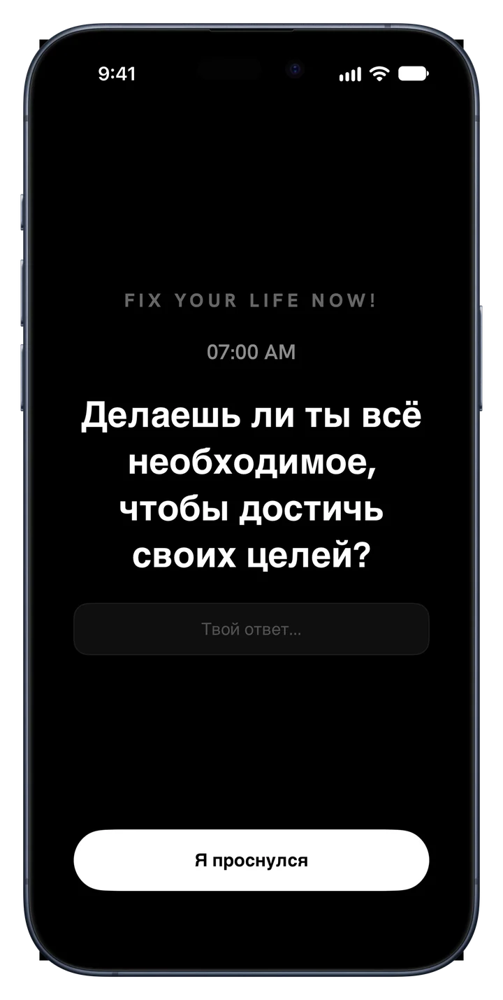
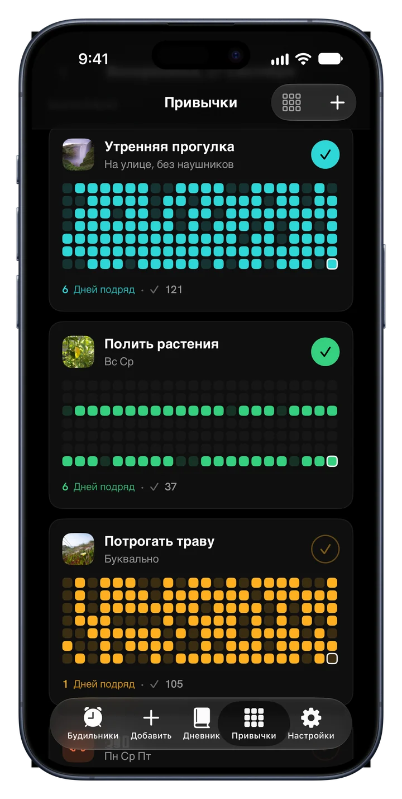
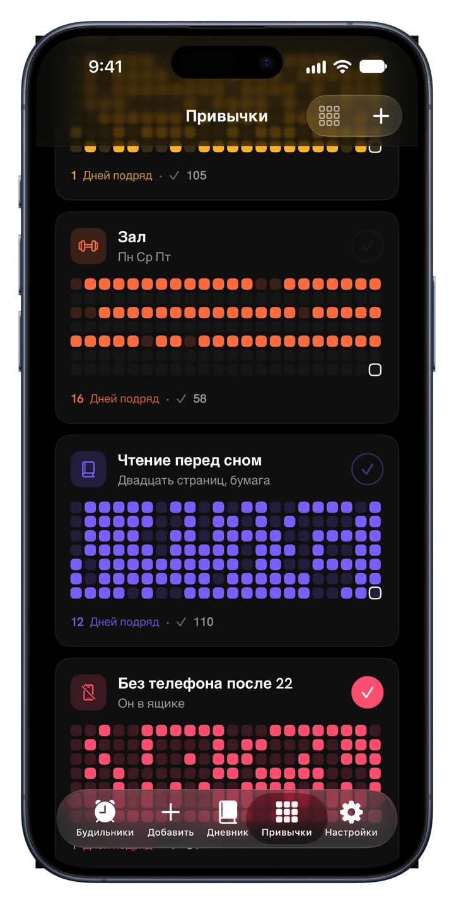
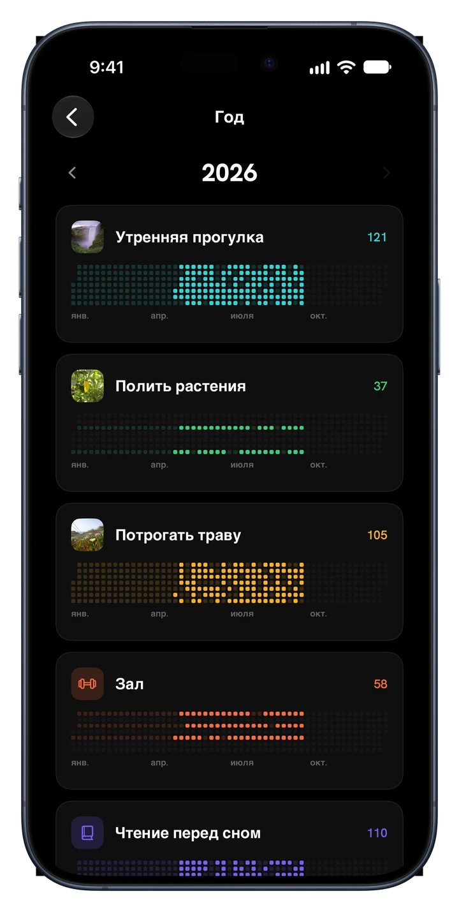
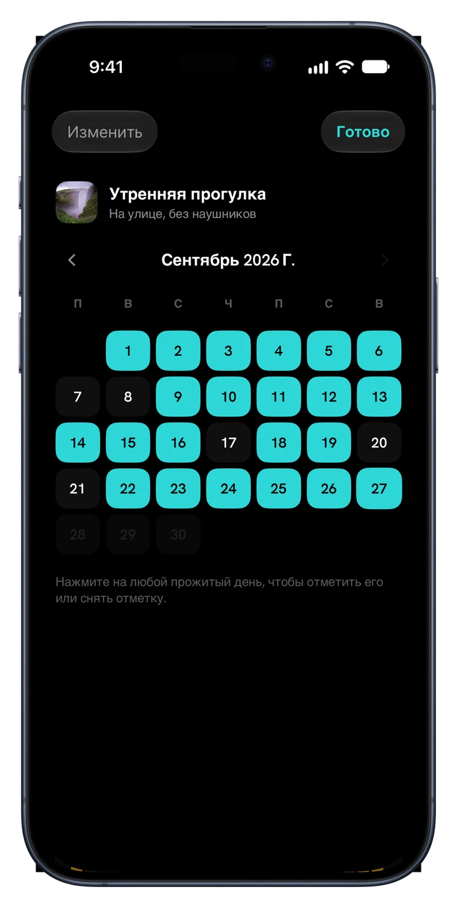
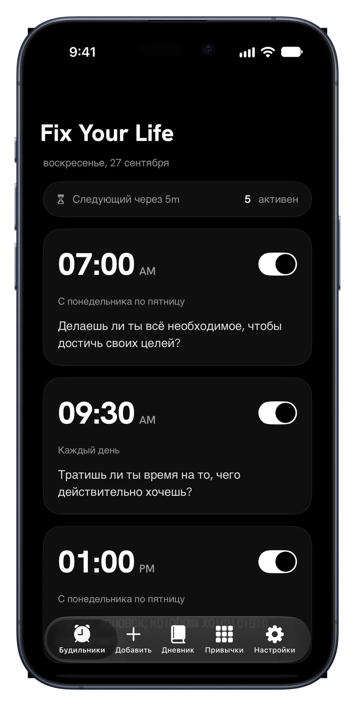
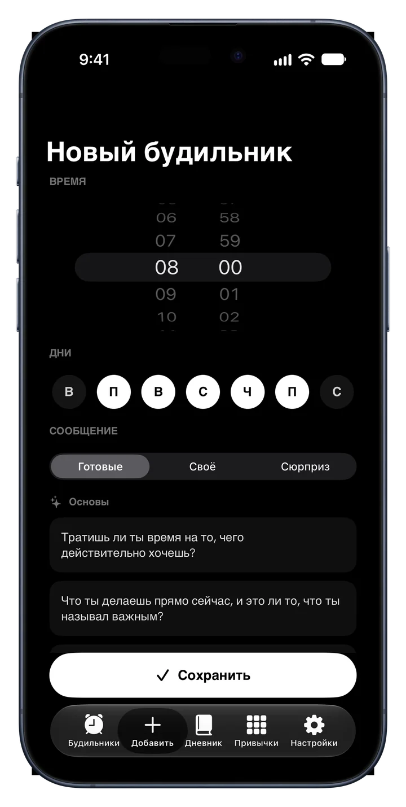
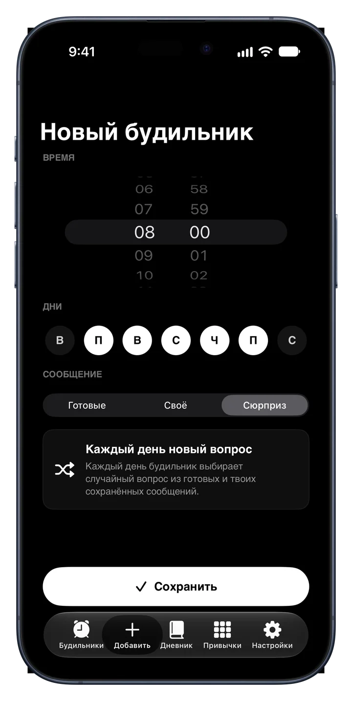
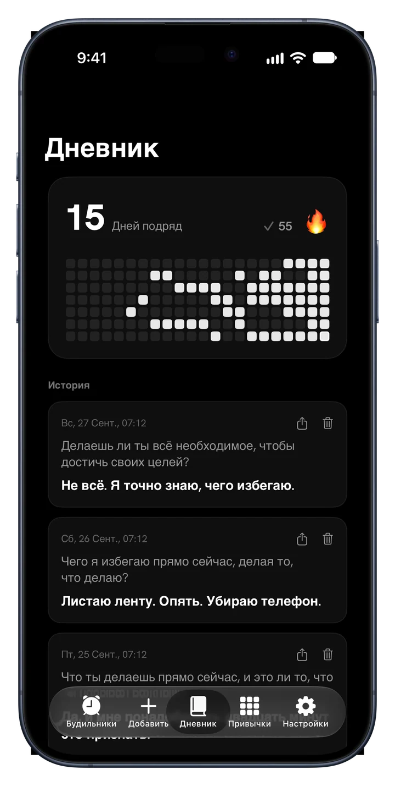
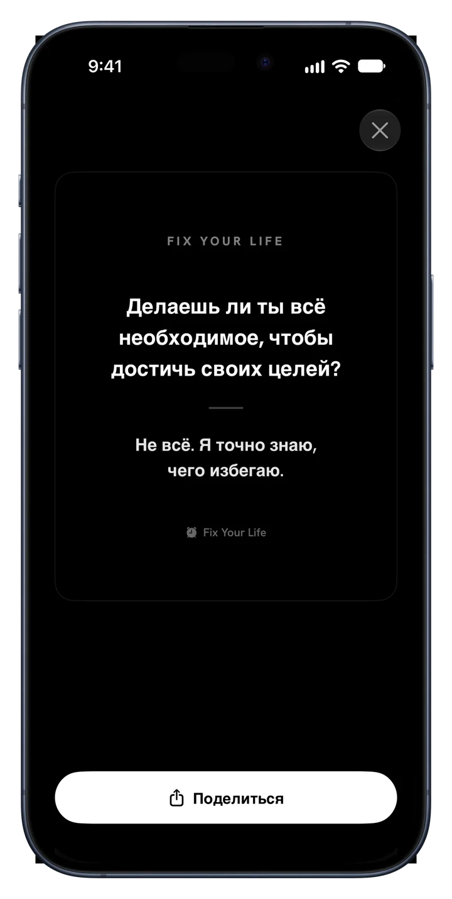

Утренняя прогулка
Каждый деньПолгода, по квадрату в день
Fix Your Life будит тебя вопросом, который нельзя отложить, и помогает держаться того, что ты решил: привычки с твоими фото, серии и весь год в цвете.
Бесплатная загрузка · Один будильник и одна привычка бесплатно, навсегда · Без рекламы. Никогда.



Новое · Привычки
Добавь то, что действительно хочешь соблюдать. Дай каждой привычке лицо, отмечай её и смотри, как серия растёт в своём цвете.


Полгода, по квадрату в день
Полгода, по квадрату в день
Полгода, по квадрату в день
Внутри приложения
Каждый экран сделан ради одного: разбудить тебя для твоей собственной жизни.

Будильники со смыслом
Ставь будильники на любое время и любой день. Каждый несёт вопрос вместо звука, который выключают и забывают. Ответь одной строкой, и день начнётся честно.

34 вопроса · 6 наборов
Основы, Амбиции, Время и Смертность, Идентичность, Честное Зеркало и Живость. Это не аффирмации. Это вопросы, которых ты избегал. Или напиши свои.

Режим «Сюрприз»
Повторение превращается в фоновый шум. Режим «Сюрприз» выбирает новый вопрос для каждого дня недели, и будильник не теряет остроты.

Дневник, который спрашивает первым
Каждый ответ сохраняется с вопросом и датой. Серия, тепловая карта и история на месте, и постоянство становится видимым.

Виджеты
Твоя серия и вопрос дня, чтобы первым ты видел то, чего избегал.

Делись победами
Преврати любой ответ в аккуратную карточку и поделись где угодно. Твои ответы — доказательство, что ты был здесь, и некоторые заслуживают дневного света.
Как это работает
План готов ещё до конца первой минуты.
Утро, дисциплина, здоровье, фокус, экранное время или сон. План строится вокруг этого.
Выбери время. Он звонит каждый день с вопросом под твой выбор.
Маленькую, ежедневную и свою. Добавь фото, выбери цвет, отмечай.
Каждый выполненный день зажигает квадрат. Пропустишь один — это видно. Продолжай, и год заполнится цветом.
Цены
Один будильник и одна привычка бесплатны навсегда, со всеми функциями. Premium — чтобы вести целый день.
$0 навсегда
Без карты и пробного периода
$17.99 / год
3 дня бесплатно · около $0.35 в неделю
$39.99 один раз
Один платёж, без подписки
Также есть недельный план за $4.99. Цены в долларах США; App Store покажет цену для твоей страны. Бесплатный период — для новых подписчиков годового плана.
Вопросы
«Если бы кто-то снял последние два часа твоей жизни, решил бы он, что ты хочешь того, чего говоришь, что хочешь?»
Один вопрос утром. Один квадрат в день. Так год меняет цвет.
Загрузите вApp StoreБесплатная загрузка · 45 языков · Без рекламы. Никогда.